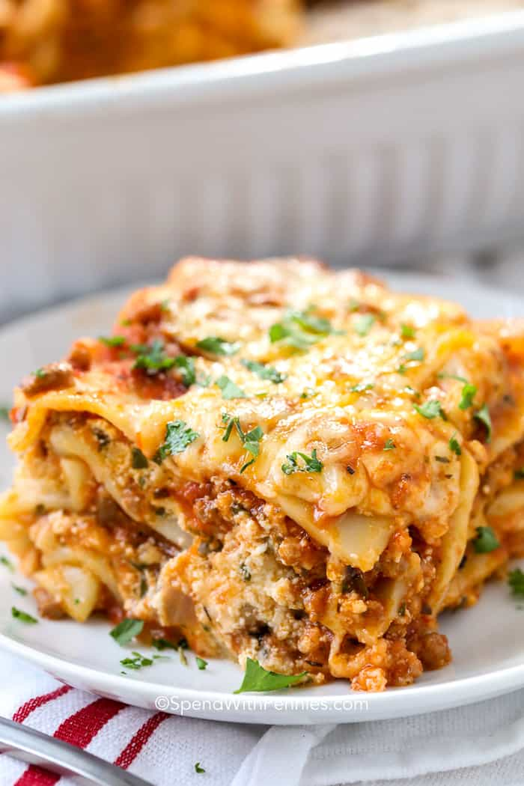

Home
Lasagna

What is lasagna
Lasagne (US: /ləˈzɑːnjə/, also UK: /ləˈzænjə/,[1] Italian: [laˈzaɲɲe]; singular lasagna, Italian: [laˈzaɲɲa]) are a type of pasta, possibly one of the oldest types,[2] made of very wide, flat sheets. Either term can also refer to an Italian dish made of stacked layers of lasagne alternating with fillings such as ragù (ground meats and tomato sauce), vegetables, cheeses (which may include ricotta, mozzarella, and parmesan), and seasonings and spices, like Italian seasoning, such as garlic, oregano and basil.
Ingredients
- 1 pound sweet Italian sausage
- ¾ pound lean ground beef.
- ½ cup minced onion
- 2 cloves garlic, crushed
- 1 (28 ounce) can crushed tomatoes
- 2 (6 ounce) cans tomato paste
- 2 (6.5 ounce) cans canned tomato sauce
- ½ cup water.
Instructions
- Put pasta water on to boil.
- Brown the ground beef.
- Cook the bell pepper, onions, garlic, add back the beef.
- Transfer to medium sized pot, add tomatoes and remaining sauce ingredients to build the sauce.
- Boil and drain the lasagna noodles.
- Heat the oven to 375°F.
- Assemble the lasagna
- Bake.
- Cool and serve
Home